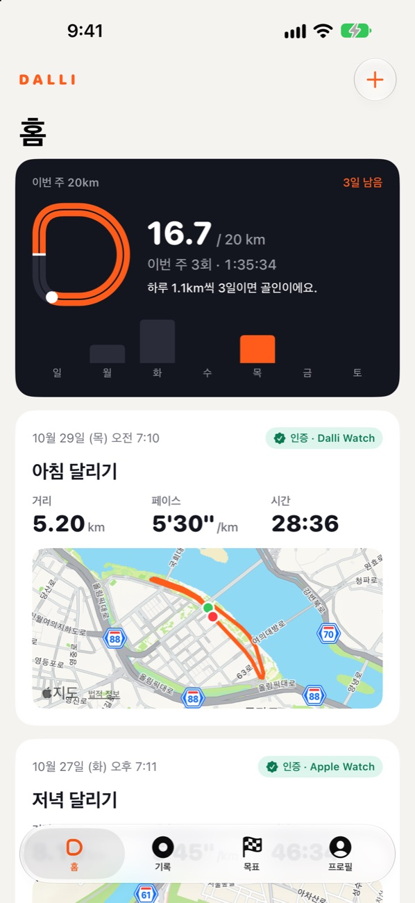
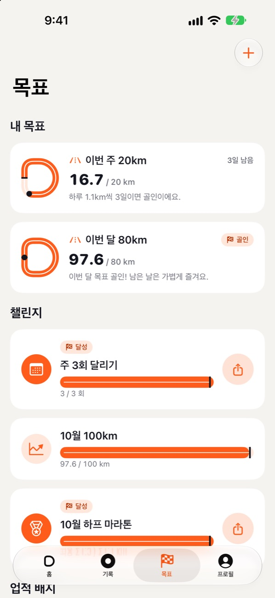
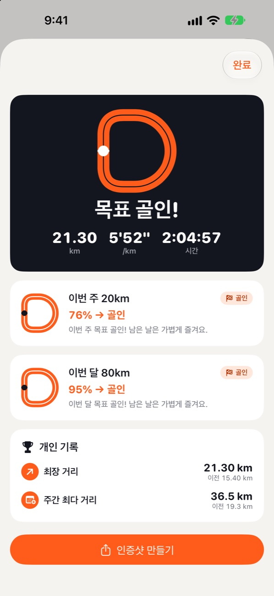
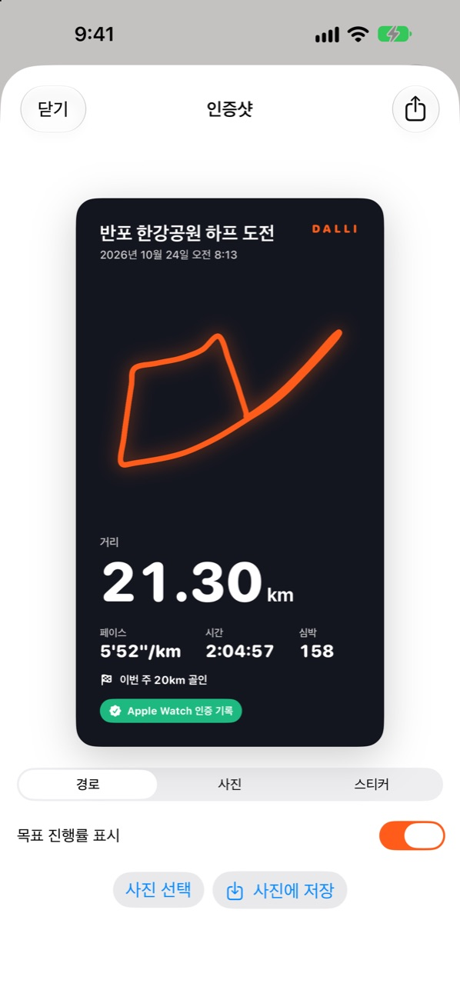
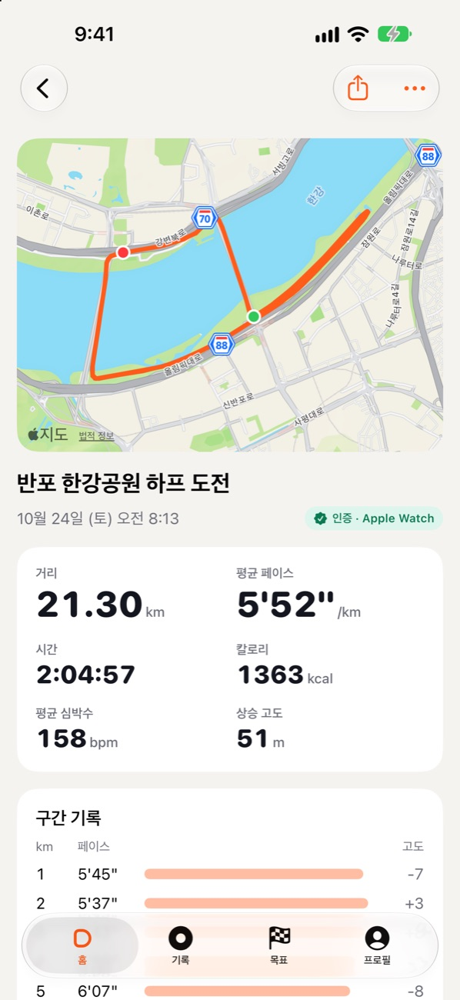
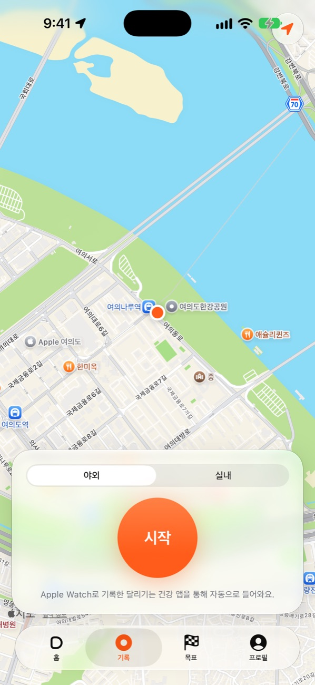

01
iPhone과 Apple Watch로 기록Record on iPhone and Watch
시작 버튼 하나로 경로·거리·페이스·심박수를 기록해요. 워치에서 달린 기록은 iPhone으로 자동으로 들어와요.One tap records route, distance, pace and heart rate. Watch runs sync to your iPhone on their own.
달리기 기록 · 목표 · 인증샷Track runs · Hit goals · Share
오늘 몇 km면 되는지 알려주는 러닝 앱. iPhone과 Apple Watch로 기록하고, 피트니스 앱에 쌓인 기록도 자동으로 가져와요. A running app that tells you what today needs. Record with iPhone and Apple Watch, and bring in the runs already in your Fitness app.

Dalli [dal·li] — 달리다, 달리기의 ‘달리’from 달리다, “to run”
이름의 뜻The name
한국어로 달리는 일은 달리기, 달리는 동작은 달리다예요. 두 말이 함께 품고 있는 뿌리 ‘달리’를 그대로 소리 내어 이름으로 삼았어요. 달리고, 달리자, 달렸다 — 모든 달리기는 ‘달리’에서 시작하니까요.
In Korean, running is 달리기 (dal-li-gi) and to run is 달리다 (dal-li-da). Both grow from the same root, 달리 — spelled in English as Dalli. Every run, in every tense, starts there.
무엇을 할 수 있나요What it does
시작 버튼 하나로 경로·거리·페이스·심박수를 기록해요. 워치에서 달린 기록은 iPhone으로 자동으로 들어와요.One tap records route, distance, pace and heart rate. Watch runs sync to your iPhone on their own.
피트니스 앱과 다른 러닝 앱이 건강 앱에 남긴 달리기를 지도 경로·구간 기록까지 가져와요. 연도별·월별로 모아 볼 수 있어요.Runs other apps saved to Health come in with routes and splits. Browse them by year and month.
센서로 측정한 기록에는 인증 배지가 붙어요. 목표와 챌린지에는 인증 기록만 집계해요.Sensor-measured runs get a verified badge, and only those count toward goals and challenges.
주간·월간 거리, 대회 완주, 기록 단축. “하루 1.3km씩 5일이면 골인이에요”처럼 남은 길을 알려줘요.Weekly distance, a race, a time to beat — broken down into “1.3 km a day for 5 days gets you there.”
달리기를 마치면 목표 트랙이 그만큼 앞으로 나아가요. 최장 거리, 최고 5K·10K 같은 개인 기록도 찾아줘요.Your goal track moves forward with every run, and personal bests like your fastest 5K are found for you.
경로·사진·투명 스티커 세 가지 스타일로 꾸며 스토리에 바로 올려요.Route, photo or transparent sticker — ready for your stories.
화면 둘러보기Screens





개인정보Privacy
Dalli에는 서버가 없어요. 달리기·위치·건강 데이터는 iPhone과 Apple 건강 앱 밖으로 나가지 않아요.Dalli has no server. Your runs, location and health data never leave your iPhone and Apple Health.